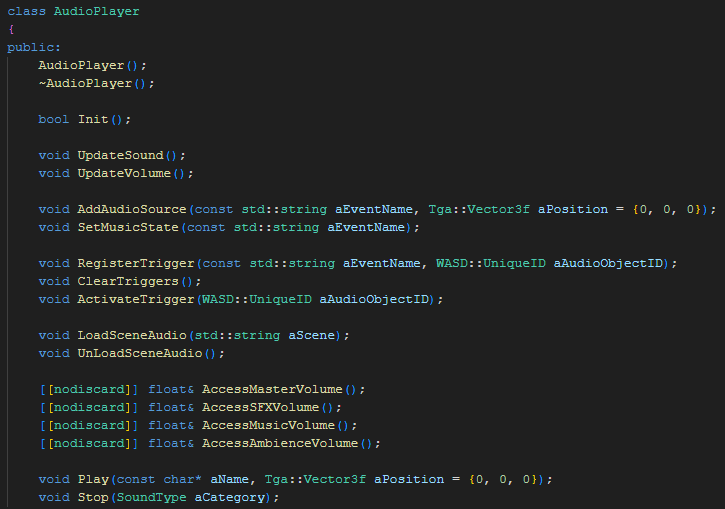
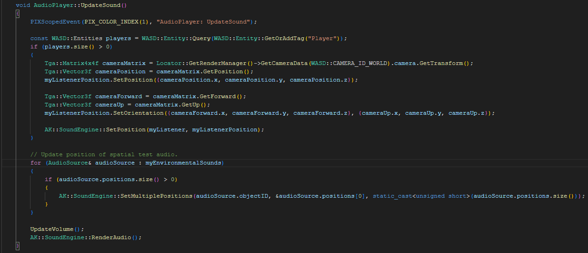
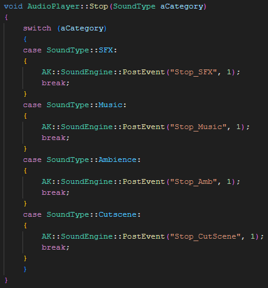
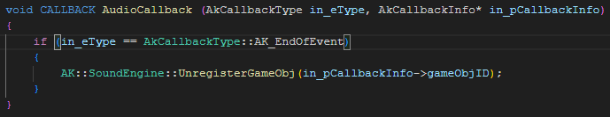

A Dragon's Wake was the fifth game project we worked on at TGA, it was the first time which we were working in our final teams, which made for a foundation
for the coming projects as well.
During it we were tasked to customize and improve upon the school's game engine, in addition to creating a game based on diablo 3, in a series called Spite.
The finished game was name A Dragon's Wake, the story was centered on a monk, travelling up a mountain, defeating corrupted people in the forms of fish and
healing their souls in the process of reaching the dragon, which was the cause of the corruption.
Previous years have also made their own additions to Spite, and thus we were tasked with creating a game which conformed to the graphical style in addition to being a compelling game experience.
During the project I was mostly tasked with working on a variety of tasks, but the main focus for most of it was implementing audio from Wwise.
This meant I spent a lot of my time communicating with students from the Audio Production Academy (APA) in stockholm. They were in charge of producing
audio for the game, and as such I would talk to them about how to implement stuff and the like.
In order to facilitate this endeavour I had to learn a lot about how to communicate with Wwise and translate things into code adequately.
I thus ended up creating an Audio Player which could dynamically create and destroy audio objects and instances in game as they were required
and subsequently used up.
Despite having been a shaky implementation which I've been able to improve on since then this allowed a simple structure for playing up any desired
sounds effects whenever, and whereever you need them, without needing to worry about attaching them to objects and so manually.
The two biggest issues I encountered were largely caused by my lack of experience with how Wwise worked and could be communicated with, firstly
I just failed to consider making use of the Wwise_IDs.h file which contains all available sounds, and states defined as simple unsigned integers,
instead we ended up having to manually typing out the names of events we wanted. This didn't prevent any sort of functionality, but it did make it
more cumbersome to implement it such that sounds were played in game, leading to me having to spend a bunch of time implementing the various sounds
given it was not intuitive.
The second issue I encountered was more problematic, given the limited amount of time available to learn about and implement Wwise I didn't manage to
figure out how to stop sounds properly using code. This meant that the game lacked a dedicated method for stopping sounds of various categories,
luckily the partners we were working with at APA were able to create dedicated Events for stopping music and sound effects. This was an unfortunate
workaround, but given the limited time I had to spend on implementing Audio it's hardly surprising that I would end up missing stuff like that.

The least obvious functions I imagine is the ones regarding triggers, they were implemented as a way to trigger changes in the music states during gameplay, this was used in order to modify the music in different sections of levels. You'd simply have to register a trigger's name to an en Entity ID, then when it was triggered the game would call ActivateTrigger using the Entity ID of the trigger, which could be used to call the appropriate trigger event.
LoadSceneAudio simply found any placed out audio objects in the scene and added them into the Wwise scene, whereas UnLoadSceneAudio stopped all instances of environmental sounds, to ensure sounds wouldn't persist between levels.

Other than that it updated the game volume, which included a simple implementation of a debug menu for handling audio things, and then rendered the audio itself in Wwise.

In order to resolve this I asked our friends over at APA for help, thankfully they were knowledgable enough to be able to solve the issue using dedicated Audio Events which stopped the different categories of sound we made use of, and as such I was able to implement this simple function which could stop any category of sound based on an enum input.


This meant having to calculate the position and rotation of all the bones used when animating the model in order to track where the bone a collider was attached to was in space, and making sure that the collider followed it.
This was not something which was adequately planned for, and required reading the position of the bones in the model once per frame for every collider which was affected, however the result is hard to argue with, as the finished colliders follow along with the model very accurately.